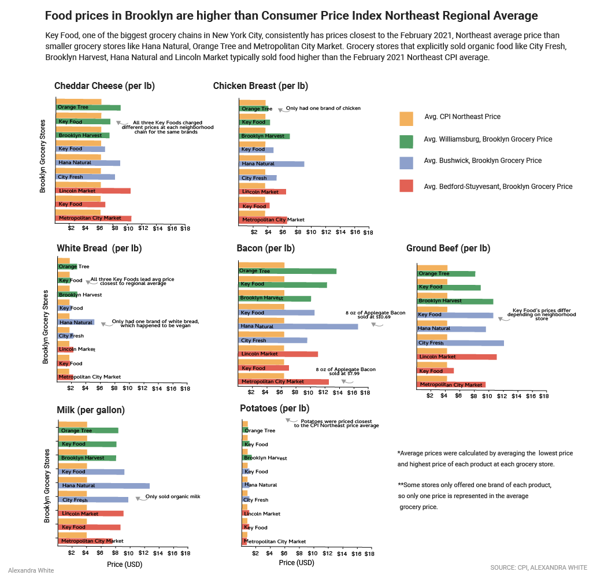

Lead: The pandemic has driven up food prices nationally, but food prices in Brooklyn,
NY for cheddar cheese, chicken breast, white bread, bacon, ground beef, milk, and potatoes
were higher than the Average Consumer Price Index February 2021 Northeast price
for each product this month.
Nutgraph:Smaller grocery stores frequently priced food at higher prices
than Key Food, which is one of the biggest grocery chains in New York City.
Key Food has more buying power than smaller grocery stores that cannot
afford to buy as large quantities of food in bulk. Smaller grocery stores
also prioritize selling organic, natural food in order to compete with
larger grocery stores, which drives up prices. The high prices of food in
New York City in proportion to the regional average is troubling because,
according to the city of New York there were 1.2 million New Yorkers who
were food insecure pre-pandemic. .

Key Points:
-
The biggest reason for the high price of food in certain stores were
organic products, specifically for milk, cheese and chicken.
There is a high demand for organic, natural food in New York City.
Small grocery stores like Orange Tree in Williamsburg sell organic, natural
products because these are the products that the neighborhood wants,
said owner Ki Heon Kim.
-
Big grocery stores like Key Food have more buying power and can
afford to price food at lower prices. In fact, Key Food just struck a
$10 billion deal with United Natural Foods Inc., a natural and organic
wholesale distributor that works with Whole Foods, to distribute food
for Key Foods over the next ten years. Patrick Penfield, Professor of
Supply Chain Management at Syracuse University told Good Morning America
that supermarkets that food prices will continue to rise nationally until May.
“The major factors impacting costs are demand, weather issues within
the U.S. and food producers and supermarkets not offering substantial
discounts to shoppers,” Penfield told Good Morning America.
-
Shopping for affordable, healthy food isn’t easy, but the city government
of New York is working to bring organic, healthy food at affordable prices
to underserved communities. They have expanded their program FRESH, which
is a zoning initiative to bring more affordable, healthy food to communities
that include Bushwick, Bedford-Stuyvesant and Williamsburg. “Access to
fresh, healthy food is a priority for me and for this Council, and the
expansion of the FRESH zoning incentive is a major step forward in our
fight to ensure all New Yorkers can eat healthy no matter where they live.
Far too many neighborhoods in our city lack access to affordable,
healthy food options,” said Speaker Corey Johnson.
Kicker: Even though the city is planning on increasing the amount of
grocery stores that sell healthy food, organic, natural food is
much more expensive, which is not accesible for low-income New Yorkers.